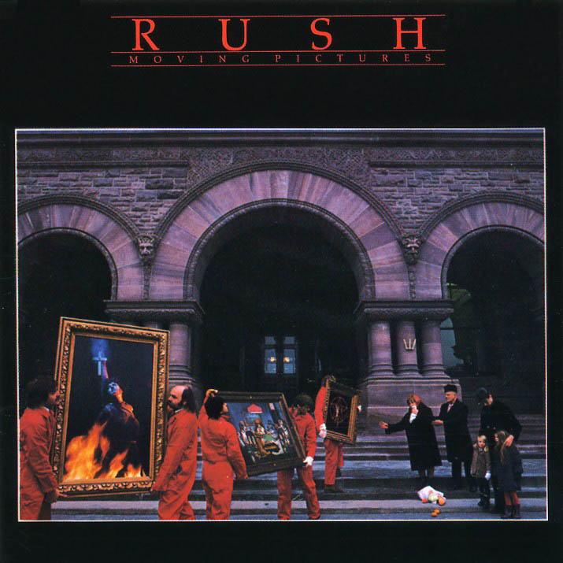

My Rush Top Ten List

Top 10 Albums...
- Moving Pictures (1981)
- Signals (1982)
- 2112 (1978)
- Snakes & Arrows (2008)
- Grace Under Pressure (1984)
- Counterparts(1993)
- Power Windows (1985)
- Roll the Bones (1991)
- Permanent Waves (1980)
- Clockwork Angels (2012)
Top 10 Songs...
- Tom Sawyer (Moving Pictures)
- Subdivisions (Signals)
- 2112 (2112)
- Spirit of the Radio (Permanent Waves)
- YYZ (Moving Pictures)
- Far Cry (Snakes & Arrows)
- Distant Early Warning (Grace Under Pressure)
- Big Money (Power Windows)
- Red Barchetta (Moving Pictures)
- Working Man (Rush)